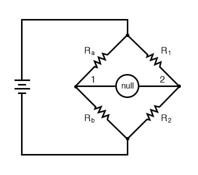
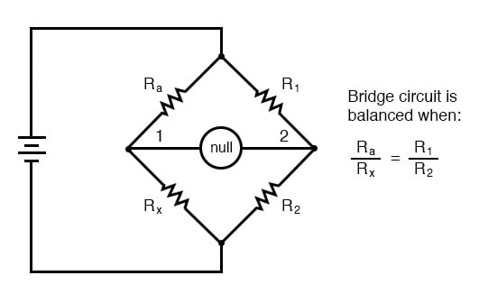
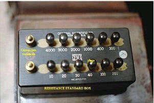
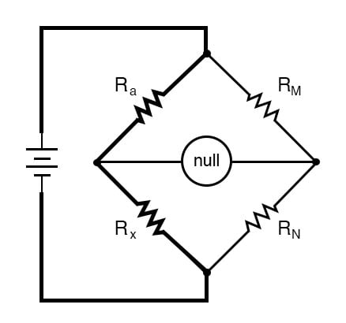
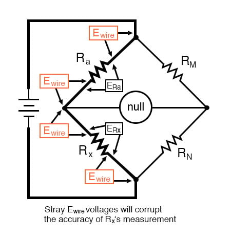
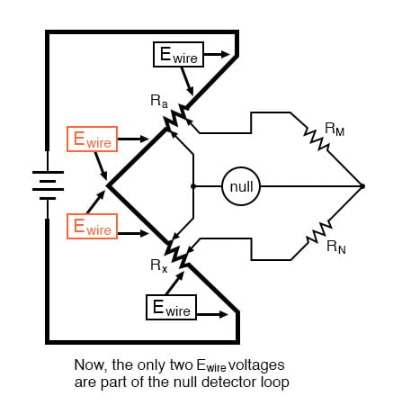
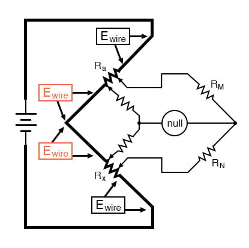
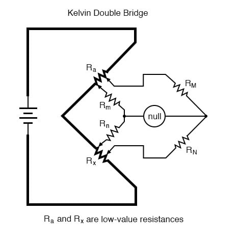
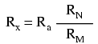
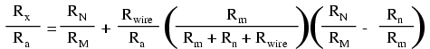

08. DC Metering Circuits
Bridge Circuits
No text on electrical metering could be called complete without a section on bridge circuits. These ingenious circuits make use of a null-balance meter to compare two voltages, just like the laboratory balance scale compares two weights and indicates when they’re equal. Unlike the “potentiometer” circuit used to simply measure an unknown voltage, bridge circuits can be used to measure all kinds of electrical values, not the least of which being resistance.
Wheatstone Bridge
The standard bridge circuit, often called a Wheatstone bridge, looks something like this:

When the voltage between point 1 and the negative side of the battery is equal to the voltage between point 2 and the negative side of the battery, the null detector will indicate zero and the bridge is said to be “balanced.” The bridge’s state of balance is solely dependent on the ratios of Ra/Rb and R1/R2, and is quite independent of the supply voltage (battery).
To measure resistance with a Wheatstone bridge, an unknown resistance is connected in the place of Ra or Rb, while the other three resistors are precision devices of known value. Either of the other three resistors can be replaced or adjusted until the bridge is balanced, and when balance has been reached the unknown resistor value can be determined from the ratios of the known resistances.
A requirement for this to be a measurement system is to have a set of variable resistors available whose resistances are precisely known, to serve as reference standards. For example, if we connect a bridge circuit to measure an unknown resistance Rx, we will have to know the exact values of the other three resistors at balance to determine the value of Rx:

Each of the four resistances in a bridge circuit are referred to as arms. The resistor in series with the unknown resistance Rx (this would be Ra in the above schematic) is commonly called the rheostat of the bridge, while the other two resistors are called the ratio arms of the bridge.
Accurate and stable resistance standards, thankfully, are not that difficult to construct. In fact, they were some of the first electrical “standard” devices made for scientific purposes. Here is a photograph of an antique resistance standard unit:

This resistance standard shown here is variable in discrete steps: the amount of resistance between the connection terminals could be varied with the number and pattern of removable copper plugs inserted into sockets.
Wheatstone bridges are considered a superior means of resistance measurement to the series battery-movement-resistor meter circuit discussed in the last section. Unlike that circuit, with all its nonlinearities (nonlinear scale) and associated inaccuracies, the bridge circuit is linear (the mathematics describing its operation are based on simple ratios and proportions) and quite accurate.
Given standard resistances of sufficient precision and a null detector device of sufficient sensitivity, resistance measurement accuracies of at least +/- 0.05% are attainable with a Wheatstone bridge. It is the preferred method of resistance measurement in calibration laboratories due to its high accuracy.
There are many variations of the basic Wheatstone bridge circuit. Most DC bridges are used to measure resistance, while bridges powered by alternating current (AC) may be used to measure different electrical quantities like inductance, capacitance, and frequency.
Kelvin Double Bridge
An interesting variation of the Wheatstone bridge is the Kelvin Double bridge, used for measuring very low resistances (typically less than 1/10 of an ohm). Its schematic diagram is as such:

The low-value resistors are represented by thick-line symbols, and the wires connecting them to the voltage source (carrying high current) are likewise drawn thickly in the schematic. This oddly-configured bridge is perhaps best understood by beginning with a standard Wheatstone bridge set up for measuring low resistance, and evolving it step-by-step into its final form in an effort to overcome certain problems encountered in the standard Wheatstone configuration. If we were to use a standard Wheatstone bridge to measure low resistance, it would look something like this:

When the null detector indicates zero voltage, we know that the bridge is balanced and that the ratios Ra/Rx and RM/RN are mathematically equal to each other. Knowing the values of Ra, RM, and RN provides us with the necessary data to solve for Rx...almost.
We have a problem in that the connections and connecting wires between Ra and Rx possess resistance as well, and this stray resistance may be substantial compared to the low resistances of Ra and Rx. These stray resistances will drop substantial voltage, given the high current through them, and thus will affect the null detector’s indication and thus the balance of the bridge:

Since we don’t want to measure these stray wire and connection resistances but only measure Rx, we must find some way to connect the null detector so that it won’t be influenced by voltage dropped across them. If we connect the null detector and RM/RN ratio arms directly across the ends of Ra and Rx, this gets us closer to a practical solution:

Now the top two Ewire voltage drops do not affect the null detector and do not influence the accuracy of Rx‘s resistance measurement. However, the two remaining Ewire voltage drops will cause problems, as the wire connecting the lower end of Ra with the top end of Rx is now shunting across those two voltage drops, and will conduct substantial current, introducing stray voltage drops along its own length as well.
Knowing that the left side of the null detector must connect to the two near ends of Ra and Rx to avoid introducing those Ewire voltage drops into the null detector’s loop and that any direct wire connecting those ends of Ra and Rx will itself carry substantial current and create more stray voltage drops, the only way out of this predicament is to make the connecting path between the lower end of Ra and the upper end of Rx substantially resistive:

We can manage the stray voltage drops between Ra and Rx by sizing the two new resistors so that their upper to lower ratio is the same as the two ratio arms on the other side of the null detector. This is why these resistors were labeled Rm and Rn in the original Kelvin Double bridge schematic: to signify their proportionality with RM and RN.

With ratio Rm/Rn set equal to ratio RM/RN, rheostat arm resistor Ra is adjusted until the null detector indicates balance, and then we can say that Ra/Rx is equal to RM/RN, or simply find Rx by the following equation:

The actual balance equation of the Kelvin Double bridge is as follows (Rwire is the resistance of the thick, connecting wire between the low-resistance standard Ra and the test resistance Rx):

So long as the ratio between RM and RN is equal to the ratio between Rm and Rn, the balance equation is no more complex than that of a regular Wheatstone bridge, with Rx/Ra equal to RN/RM, because the last term in the equation will be zero, canceling the effects of all resistances except Rx, Ra, RM, and RN.
In many Kelvin Double bridge circuits, RM = Rm and RN = Rn. However, the lower the resistances of Rm and Rn, the more sensitive the null detector will be because there is less resistance in series with it. Increased detector sensitivity is good because it allows smaller imbalances to be detected and thus a finer degree of bridge balance to be attained.
Therefore, some high-precision Kelvin Double bridges use Rm and Rn values as low as 1/100 of their ratio arm counterparts (RM and RN, respectively). Unfortunately, though, the lower the values of Rm and Rn, the more current they will carry, which will increase the effect of any junction resistances present where Rm and Rn connect to the ends of Ra and Rx. As you can see, high instrument accuracy demands that all error-producing factors be taken into account, and often the best that can be achieved is a compromise minimizing two or more different kinds of errors.
REVIEW:
- Bridge circuits rely on sensitive null-voltage meters to compare two voltages for equality.
- A Wheatstone bridge can be used to measure resistance by comparing the unknown resistor against precision resistors of known value, much like a laboratory scale measures an unknown weight by comparing it against known standard weights.
- A Kelvin Double bridge is a variant of the Wheatstone bridge used for measuring very low resistances. Its additional complexity over the basic Wheatstone design is necessary for avoiding errors otherwise incurred by stray resistances along the current path between the low-resistance standard and the resistance being measured.